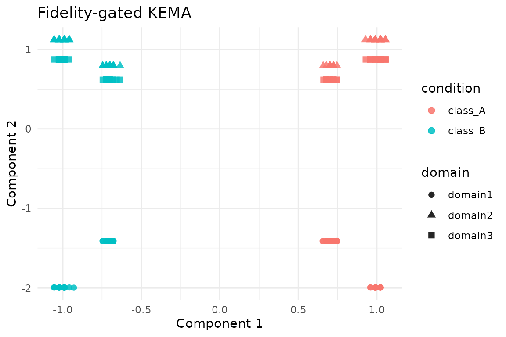
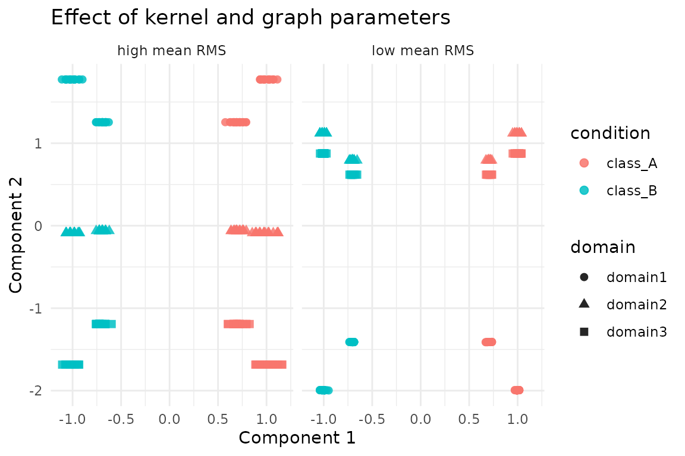

Overview
kema() aligns multiple domains by projecting them into a
shared latent space where both manifold geometry and class structure are
preserved. The function supports:
- Full KEMA on the complete kernel matrices, with every returned component required to pass generalized-eigen residual and B-orthogonality checks
-
REKEMA landmark approximations via
sample_frac - A legacy operator backend name that requests eigencore’s certified partial quotient solver, with a dense fallback for small uncertified problems. The current implementation materializes the reduced quotient matrices and is not a linear-memory large-data method
This vignette demonstrates each mode on the shared
alignment_benchmark dataset so that comparisons across
alignment methods are directly comparable.
Benchmark Hyperdesign
We load alignment_benchmark, which provides three
domains with two latent classes and modest domain-specific
transformations.
alignment_benchmark <- manifoldalign::alignment_benchmark
domain_list <- lapply(alignment_benchmark$domains, function(dom) {
multidesign(dom$x, dom$design)
})
hd <- hyperdesign(domain_list)
labels <- alignment_benchmark$labels
domain_names <- names(domain_list)
domain_sizes <- vapply(domain_list, function(dom) nrow(dom$x), integer(1))
replicated_labels <- rep(labels, length(domain_names))Full KEMA (Fidelity-Gated Solver)
KEMA solves the original generalized eigenproblem after removing
numerical kernel-null directions and exact graph-component null modes.
Small quotient problems use eigencore’s certified full solver; larger
and operator requests use its constrained generalized LOBPCG solver. A
fit is returned only when its selected positive eigenpairs meet both
eigencore’s certificate and KEMA’s independent residual and
B-orthogonality gates. Because the domains have different feature
dimensions we use multivarious::pass() (no preprocessing)
to avoid broadcasting a shared preprocessor across incompatible
shapes.
exact_fit <- kema(
hd,
y = condition,
ncomp = 2,
knn = 3,
sigma = 0.8,
solver = "exact",
preproc = multivarious::pass()
)
exact_fit$fidelity[c("passed", "max_rel_residual", "max_b_orth_offdiag")]
#> $passed
#> [1] TRUE
#>
#> $max_rel_residual
#> [1] 1.399623e-14
#>
#> $max_b_orth_offdiag
#> [1] 3.608842e-16
rms_alignment(as.matrix(exact_fit$s), domain_sizes, domain_names)
#> # A tibble: 3 × 3
#> domain_i domain_j rms
#> <chr> <chr> <dbl>
#> 1 domain1 domain2 0.0130
#> 2 domain1 domain3 0.0120
#> 3 domain2 domain3 0.00105We plot z-scored aligned scores (each component standardized across all domains); this keeps the visual scale comparable while preserving class separation.
score_tbl <- as_tibble(zscore_columns(as.matrix(exact_fit$s)), .name_repair = "minimal")
colnames(score_tbl) <- paste0("comp", seq_len(ncol(score_tbl)))
exact_scores <- score_tbl %>%
mutate(
domain = rep(domain_names, times = domain_sizes),
condition = replicated_labels
)
ggplot(exact_scores, aes(x = comp1, y = comp2, colour = condition, shape = domain)) +
geom_point(size = 2.2, alpha = 0.85) +
labs(title = "Fidelity-gated KEMA", x = "Component 1", y = "Component 2") +
theme_minimal()
The helper below compares score subspaces without assuming component signs or bases are identifiable.
REKEMA (Landmark Approximation)
Sampling landmarks via sample_frac reduces the kernel
size. Here we keep 50% of the samples per domain and run the exact
solver on the reduced system.
set.seed(2024)
rekema_fit <- kema(
hd,
y = condition,
ncomp = 2,
knn = 3,
sigma = 0.8,
solver = "exact",
sample_frac = 0.5,
preproc = multivarious::pass()
)
rekema_fit$eigenvalues$solver
#> [1] "exact"
rms_alignment(as.matrix(rekema_fit$s), domain_sizes, domain_names)
#> # A tibble: 3 × 3
#> domain_i domain_j rms
#> <chr> <chr> <dbl>
#> 1 domain1 domain2 0.0111
#> 2 domain1 domain3 0.00582
#> 3 domain2 domain3 0.00903Even with landmarks the subspace remains close to the full exact solution.
subspace_similarity(exact_fit$s[, 1:2], rekema_fit$s[, 1:2])
#> [1] 0.9053154 0.5115096Operator Backend
backend = "operator_exact" is retained for compatibility
and requests the constrained partial eigencore path. Small quotient
problems fall back to the certified dense solver if the partial result
is not certified. With sample_frac < 1, it operates on
landmark coefficients. The current implementation materializes the
nullspace-reduced quotient matrices as well as the graph and kernel
blocks, so it is not a claim of end-to-end linear scaling.
set.seed(2024)
operator_fit <- kema(
hd,
y = condition,
ncomp = 2,
knn = 3,
sigma = 0.8,
solver = "exact",
sample_frac = 0.5,
backend = "operator_exact",
preproc = multivarious::pass()
)
operator_fit$fidelity[c("passed", "eigensolver", "max_rel_residual")]
#> $passed
#> [1] TRUE
#>
#> $eigensolver
#> [1] "eigencore_lobpcg_deflated"
#>
#> $max_rel_residual
#> [1] 3.56976e-10
rms_alignment(as.matrix(operator_fit$s), domain_sizes, domain_names)
#> # A tibble: 3 × 3
#> domain_i domain_j rms
#> <chr> <chr> <dbl>
#> 1 domain1 domain2 0.0111
#> 2 domain1 domain3 0.00582
#> 3 domain2 domain3 0.00903Because the same landmark seed is used, the matrix and operator reduced backends should recover the same score subspace up to numerical indeterminacy.
subspace_similarity(rekema_fit$s[, 1:2], operator_fit$s[, 1:2])
#> [1] 1 1Tuning Key Parameters
The graph neighbourhood size knn, the Gaussian kernel
width sigma, and the trade-off u are the most
immediate levers in practice. Smaller sigma emphasises
local structure, while larger u leans on label agreement.
The grid below reports the mean RMS alignment (smaller is better) for a
few representative settings.
parameter_grid <- tidyr::expand_grid(
sigma = c(0.5, 0.8, 1.1),
knn = c(3, 6),
u = c(0.35, 0.5, 0.7)
)
grid_summary <- parameter_grid %>%
mutate(
mean_rms = purrr::pmap_dbl(
list(sigma, knn, u),
function(sigma, knn, u) {
fit <- kema(
hd,
y = condition,
ncomp = 2,
knn = knn,
sigma = sigma,
u = u,
solver = "exact",
preproc = multivarious::pass()
)
mean(rms_alignment(as.matrix(fit$s), domain_sizes, domain_names)$rms)
}
)
) %>%
arrange(mean_rms)
grid_summary
#> # A tibble: 18 × 4
#> sigma knn u mean_rms
#> <dbl> <dbl> <dbl> <dbl>
#> 1 0.8 3 0.7 0.00866
#> 2 0.8 3 0.5 0.00866
#> 3 0.8 6 0.7 0.00866
#> 4 0.8 6 0.5 0.00867
#> 5 0.8 3 0.35 0.00867
#> 6 0.8 6 0.35 0.00868
#> 7 0.5 3 0.7 0.00937
#> 8 0.5 3 0.5 0.00945
#> 9 0.5 3 0.35 0.00950
#> 10 0.5 6 0.7 0.00952
#> 11 0.5 6 0.5 0.00954
#> 12 0.5 6 0.35 0.00955
#> 13 1.1 3 0.7 0.00961
#> 14 1.1 6 0.7 0.00961
#> 15 1.1 3 0.5 0.00961
#> 16 1.1 6 0.5 0.00962
#> 17 1.1 3 0.35 0.00962
#> 18 1.1 6 0.35 0.00962The embedding geometry shifts noticeably between configurations with the lowest and highest mean RMS:
best_cfg <- grid_summary %>% slice_min(mean_rms, n = 1, with_ties = FALSE)
worst_cfg <- grid_summary %>% slice_max(mean_rms, n = 1, with_ties = FALSE)
collect_scores <- function(cfg, tag) {
fit <- kema(
hd,
y = condition,
ncomp = 2,
knn = cfg$knn[[1]],
sigma = cfg$sigma[[1]],
u = cfg$u[[1]],
solver = "exact",
preproc = multivarious::pass()
)
tbl <- as_tibble(zscore_columns(as.matrix(fit$s)), .name_repair = "minimal")
colnames(tbl) <- paste0("comp", seq_len(ncol(tbl)))
tbl %>%
mutate(
domain = rep(domain_names, times = domain_sizes),
condition = replicated_labels,
config = tag
)
}
comparison_scores <- dplyr::bind_rows(
collect_scores(best_cfg, "low mean RMS"),
collect_scores(worst_cfg, "high mean RMS")
)
ggplot(comparison_scores, aes(x = comp1, y = comp2, colour = condition, shape = domain)) +
geom_point(alpha = 0.85, size = 2.1) +
facet_wrap(~ config) +
labs(
title = "Effect of kernel and graph parameters",
x = "Component 1",
y = "Component 2"
) +
theme_minimal()
In general, tighter kernels (sigma = 0.5) with modest
neighbourhoods (knn = 3) and balanced supervision
(u = 0.5) yield the most consistent alignment on this
benchmark, while overly wide kernels and heavy supervision degrade
overlap. Use these diagnostics as a template when tuning on larger
data.
Summary
- Treat KEMA as a fidelity-gated reference method: a returned fit has passed the configured generalized-eigen checks, while a numerically unresolved fit raises an error.
-
REKEMA (
sample_frac < 1) reduces the computational burden when full kernels are too large. - Use
backend = "operator_exact"to avoid explicit generalized A/B matrices; it does not eliminate graph and kernel storage. - The RMS alignment tables highlight how closely each backend agrees across domains; lower values correspond to tighter alignment.
These examples are deliberately small for clarity—swap in your own
domains and adjust sigma, knn, or control
options to match real data.